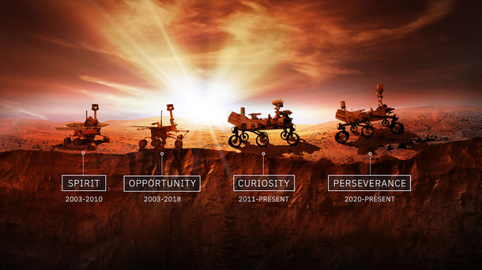
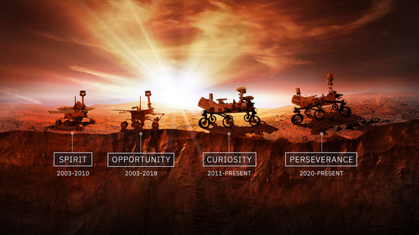

Some best Space Missions
Explore this mission.These are some wonderful missions.
Voyager Missions
The Voyager program is an American scientific program that employs two interstellar probes, Voyager 1 and Voyager 2. They were launched in 1977 to take advantage of a favorable alignment of the two gas giants Jupiter and Saturn and the ice giants, Uranus and Neptune, to fly near them while collecting data for transmission back to Earth. After launch, the decision was made to send Voyager 2 near Uranus and Neptune to collect data for transmission back to Earth.

Hubble Space Telescope
The Hubble Space Telescope (often referred to as HST or Hubble) is a space telescope that was launched into low Earth orbit in 1990 and remains in operation. It was not the first space telescope, but it is one of the largest and most versatile, renowned as a vital research tool and as a public relations boon for astronomy. The Hubble telescope is named after astronomer Edwin Hubble and is one of NASA's Great Observatories. The Space Telescope Science Institute (STScI) selects Hubble's targets and processes the resulting data, while the Goddard Space Flight Center (GSFC) controls the spacecraft.
 

Mars Rover Missions
A Mars rover is a remote-controlled motor vehicle designed to travel on the surface of Mars. Rovers have several advantages over stationary landers: they examine more territory, they can be directed to interesting features, they can place themselves in sunny positions to weather winter months, and they can advance the knowledge of how to perform very remote robotic vehicle control. They serve a different purpose than orbital spacecraft like Mars Reconnaissance Orbiter. A more recent development is the Mars helicopter.